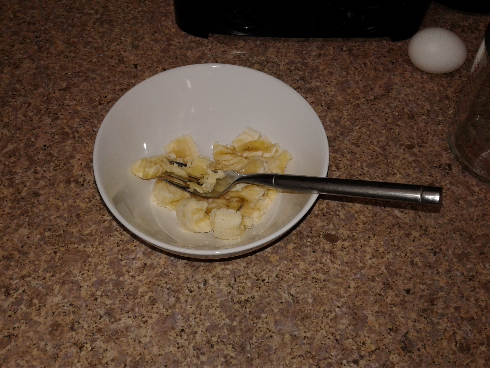
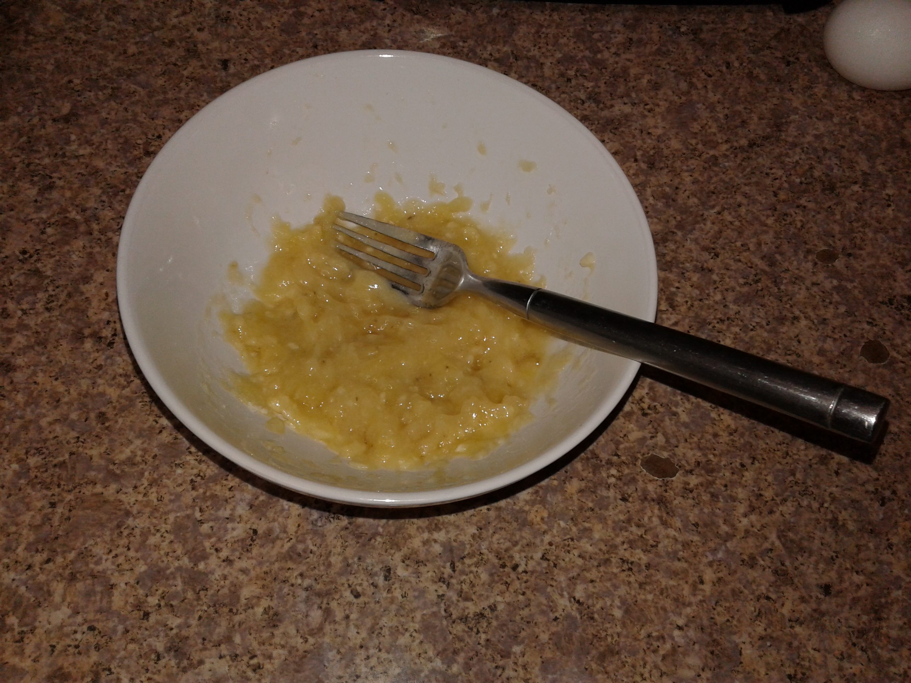
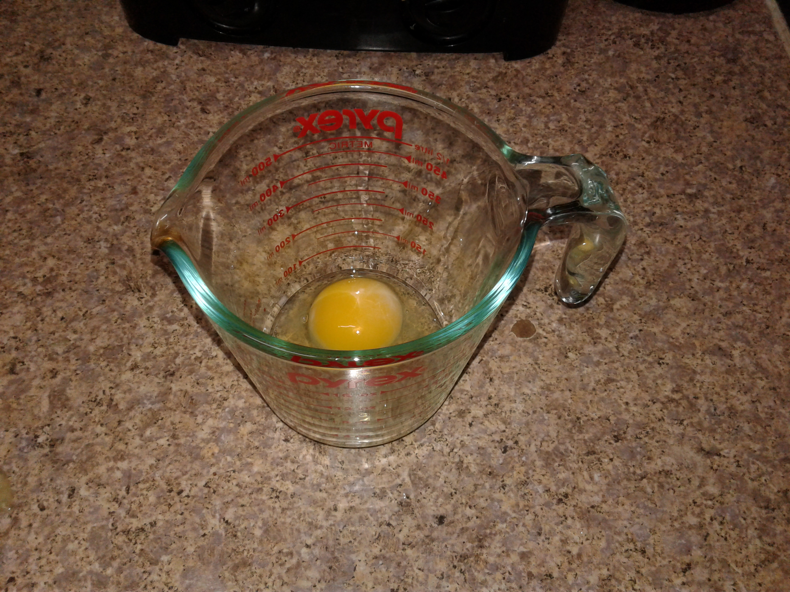
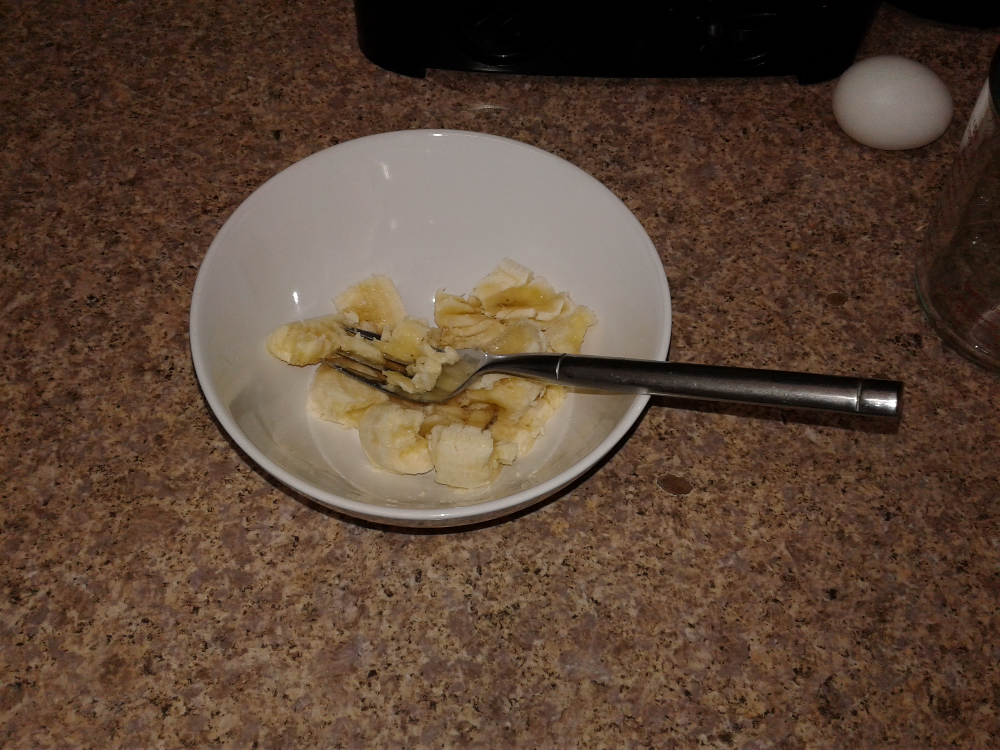
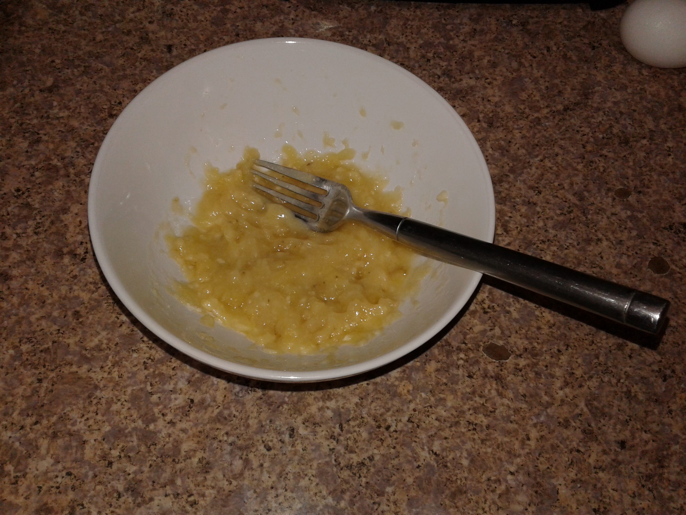
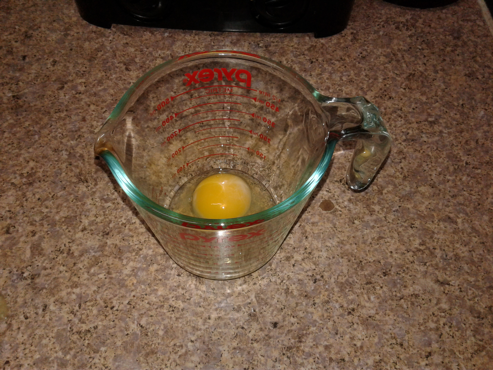
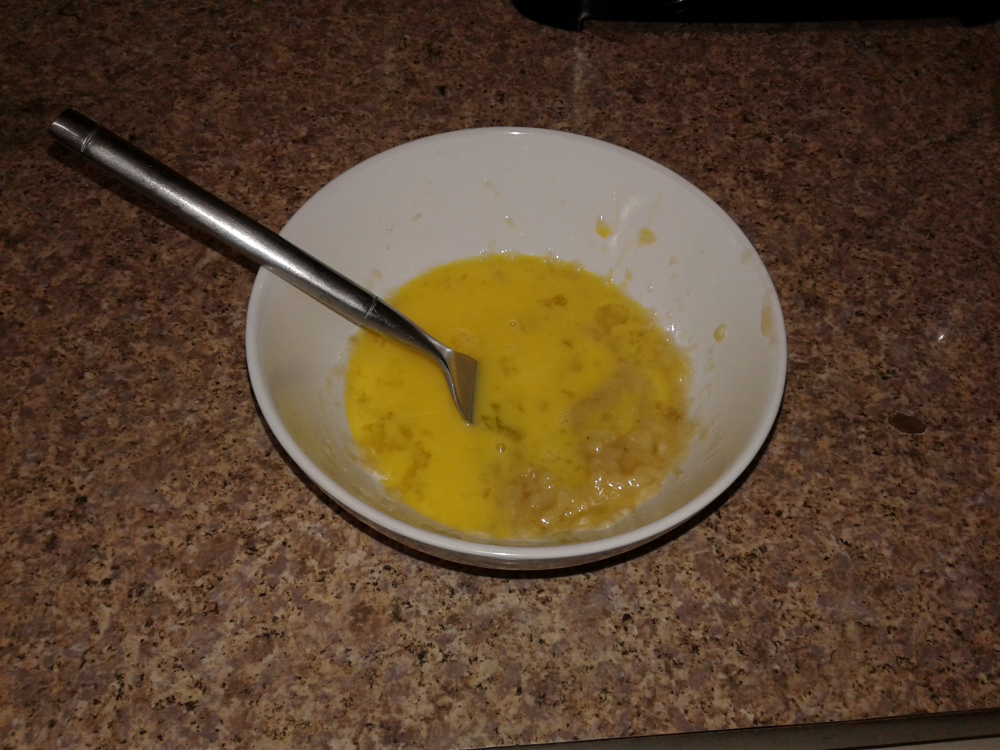
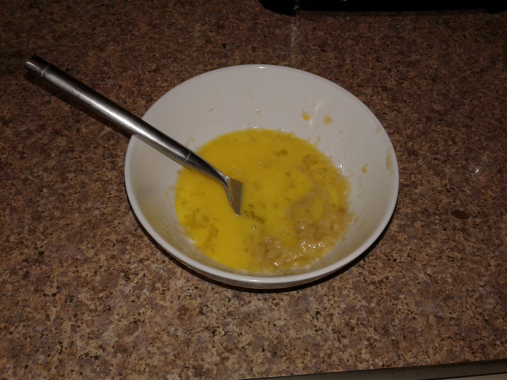
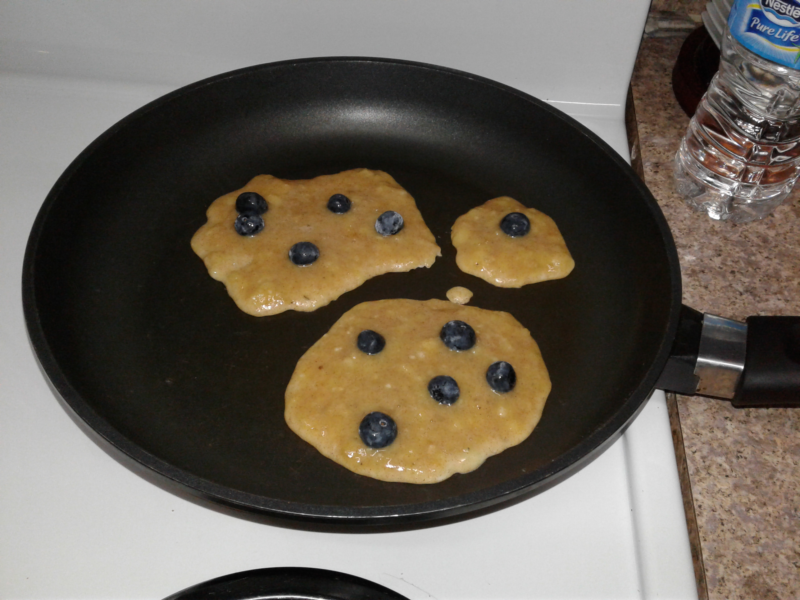
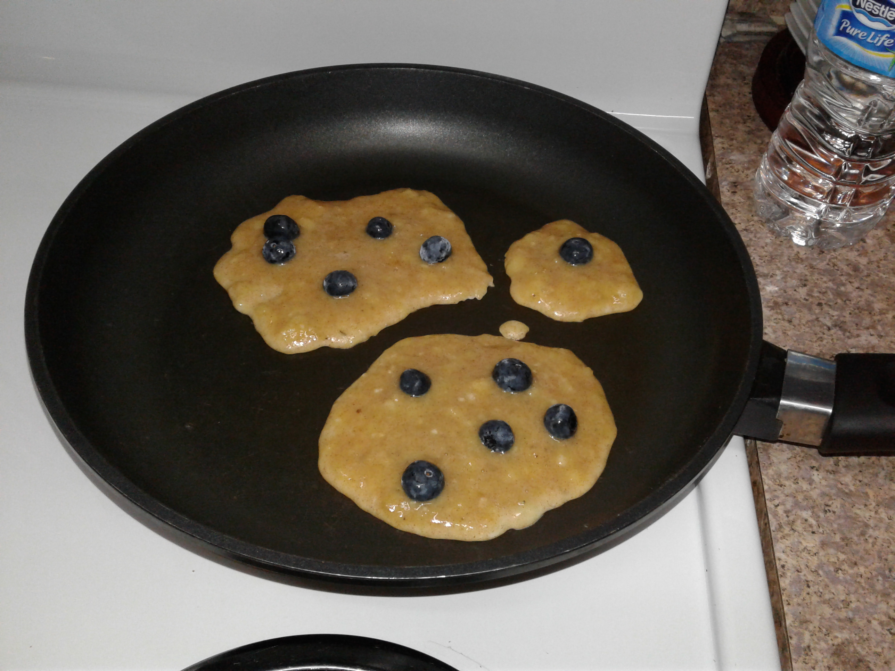

creamy overnight oats

Serving size: 1 person
Ingredients
- Oatmeal
- Banana or other fruit
- Milk of your choice
- Cinammon
Directions
- Cook the oats in the microwave or in the stove
- Bring the water to a boil with 3-2 water to oat ratio.
- Add the oats once the water boils (when you see bubbles) and drop the temperature to a little above medium.
- Stir the oats for three minutes.
- Cover and rest for 5 minutes.
- Once the oatmeal is ready, put them in a container to keep overnight in the fridge
- The next morning, take them oat and serve yourself around a cup of the oats
- Pour a third cup of milk into the bowl
- Cut the banana into slices and add it to the bowl
- **OPTIONAL: Add a spoon of cinammon to the bowl for more flavor.
- **OPTIONAL: Add a spoon of nut butter, maple syrup, or honey for a sweeter taste.
Enjoy!
 






 

 

Notes/Disclaimers
While some peole may prefer to microwave their oats or make just enough for one serving, I truly recommend that you make a week's serving of oatmeal instead. There is nothing better than having a meal ready to go!